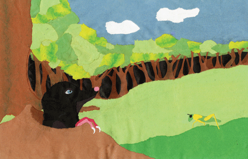

Malene's Montages


Related Images
Description
This Is an illustration I did for a childrens book about moles with cut and torn construction paper. I am particularly pleased with this one. Every thing workd together very nicely.
Data Loom Interactive, Inc.Copyright© 2012 Updated: 9/22/2012